MSK Integration with Athena¶
In this lab, we will analyze real-time streaming data in Amazon MSK with Amazon Athena.
Solution overview¶
First, we will show you how to get started with real-time SQL analytics using Athena and its connector for MSK. The process involves:
-
Registering the schema of your streaming data with AWS Glue Schema Registry. Schema Registry is a feature of AWS Glue that allows you to validate and reliably evolve streaming data against JSON schemas. It can also serialize data into a compressed format, which helps you save on data transfer and storage costs.
-
Creating a new instance of the Amazon Athena MSK Connector. Athena connectors are pre-built applications that run as serverless AWS Lambda applications, so there’s no need for standalone data export processes.
-
Using the Athena console to run interactive SQL queries on your Kafka topics.
Get started with Athena’s connector for Amazon MSK¶
In this section, we’ll cover the steps necessary to set up your MSK cluster to work with Athena to run SQL queries on your Kafka topics.
1. Define the schema of your Kafka topics with AWS Glue Schema Registry¶
To run SQL queries on your Kafka topics, you’ll first need to define the schema of your topics as Athena uses this metadata for query planning. AWS Glue makes it easy to do this with its Schema Registry feature for streaming data sources.
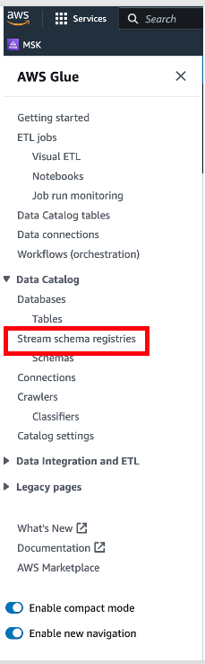
Creating Glue Stream schema registries¶
- In Stream schema registries, click on Add registry
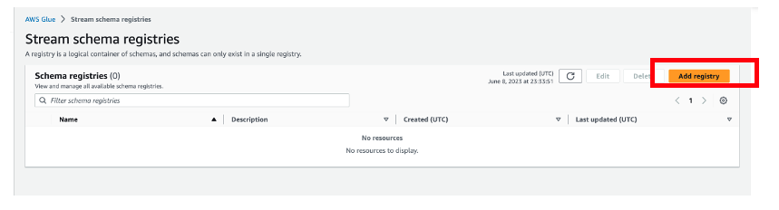 2. Provide the below configuration:
- Name: customer_schema
- Description: {AthenaFederationMSK}
3.Click Add registry
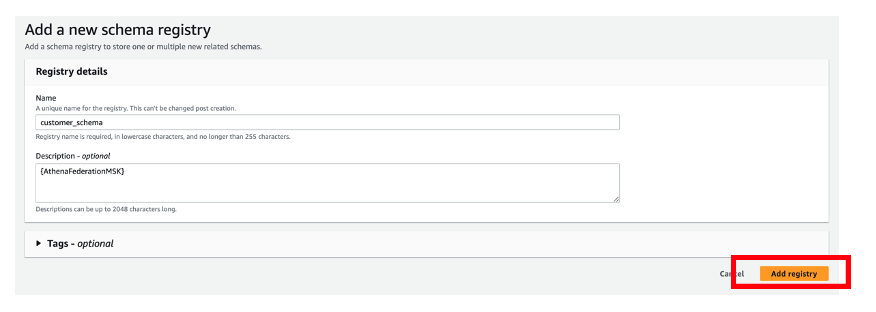
Schema Registry allows you to centrally discover, control, and evolve streaming data schemas for use in analytics applications such as Athena. With AWS Glue Schema Registry, you can manage and enforce schemas on your data streaming applications using convenient integrations with Apache Kafka. To learn more, see AWS Glue Schema Registry and Getting started with Schema Registry.
If configured to do so, the producer of data can auto-register its schema and changes to it with AWS Glue. This is especially useful in use cases where the contents of the data is likely to change over time. However, you can also specify the schema manually, resembling the following JSON structure.
Creating Schema in Glue Stream schema registries¶
- Choose the Stream schehma registry : customer_schema
- Click Create schema
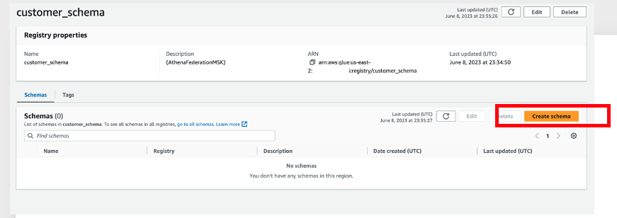 3. Provide the below configuration
- Schema name: orders
- Registry: customer_schema
- Data format: JSON
- Compatibility mode: Full - combination of 'Backward' and 'Forward'
- Description: {AthenaFederationMSK}
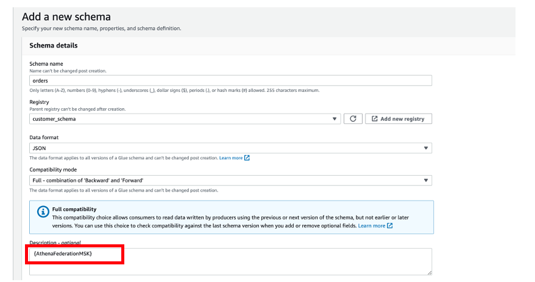
##### First schema version
{
"topicName": "orders",
"message": {
"dataFormat": "json",
"fields": [
{
"name": "customer_id",
"mapping": "customer_id",
"type": "VARCHAR"
},
{
"name": "item_id",
"mapping": "item_id",
"type": "INTEGER"
}
]
}
}
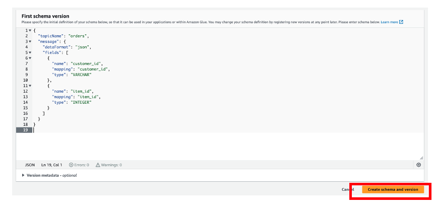
4. Click Create schema and version
For additional information on schema set up, see Schema examples for the AWS Glue Schema Registry.
2. Configure the Athena connector for MSK¶
With your schema registered with Glue, the next step is to set up the Athena connector for MSK. We recommend using the Athena console for this step. For more background on the steps involved, see Deploying a connector and connecting to a data source.
In Athena, federated data source connectors are applications that run on AWS Lambda and handle communication between your target data source and Athena. When a query runs on a federated source, Athena calls the Lambda function and tasks it with running the parts of your query that are specific to that source. To learn more about the query execution workflow, see Using Amazon Athena Federated Query in the Amazon Athena User Guide.
- Navigate to Athena console and selecting Data sources on the left navigation, then choose Create data source
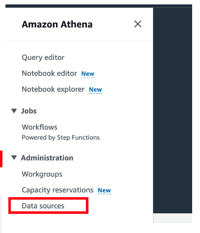
2. Click on Create Data sources
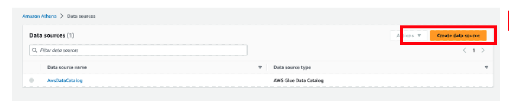 3. Choose a data source: Type MSK
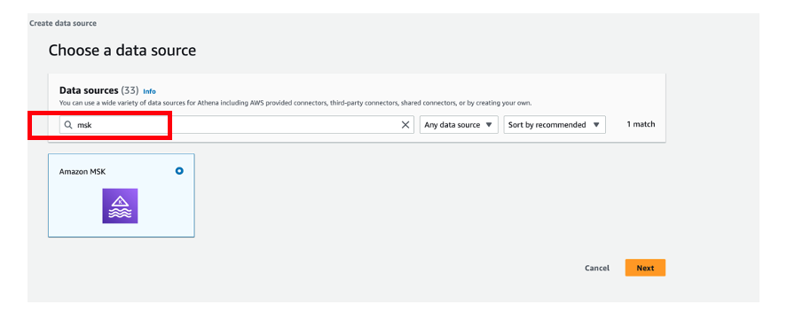
4. Choose the radio button beside the connector Amazon MSK and click Next
5. Enter the following details in Data source details section:
- Data source name: msk
- Description - To connect to amazon msk cluster
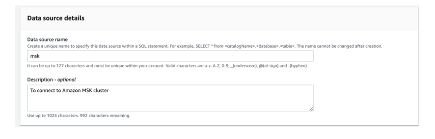 6. Under Connection details section, select Create Lambda function. This will bring you to the AWS Lambda console where you’ll provide additional configuration properties
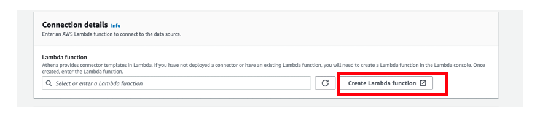 7. Scroll down to Application settings and provide below details
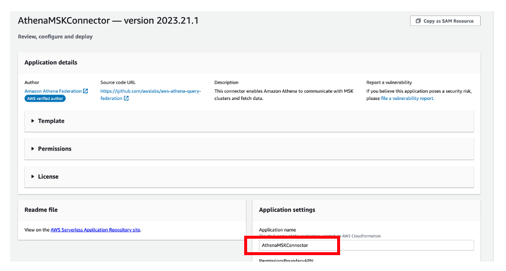
##### Fetch MSK Configuration
- To get some of the details you will have to navigate to MSK console and click on cluster name as MSKCluster-msk-labs-default
- In Cluster summary, Click on View client Information
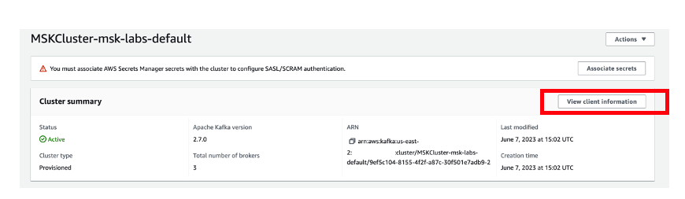
- Copy any one of the broker-ids(connection string for the private endpoint) from Authentication type - Plaintext and paste it in the Lambda configuration "KafkaEndpoint"
Note: You will get three endpoints for each of the brokers. You only need one broker endpoint for the following step. (Paste this in KafkaEndpoint) and click Done
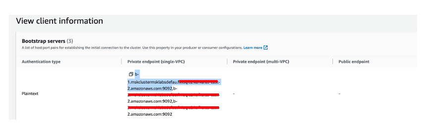
- Click on Properties Tab and scroll down to Networking settings
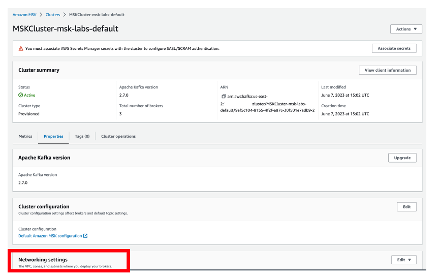
- In Networking settings, under Primary VPC configuration look for Subnets and Security groups applied.
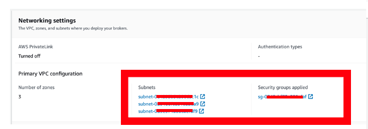
- Copy security-group-id and one subnet-id, paste them in the below configuration accordingly
KafkaEndpoint: <paste the broker-id here>
LambdaFunctionName: msk-athena-lambda-function
SecurityGroupIds: <paste the security-group-id here>
SpillBucket: msk-athena-bucket-<paste the AWS-Account-Number>
SpillPrefix: msk-athena-spill
SubnetIds: <paste the subnet-id here >
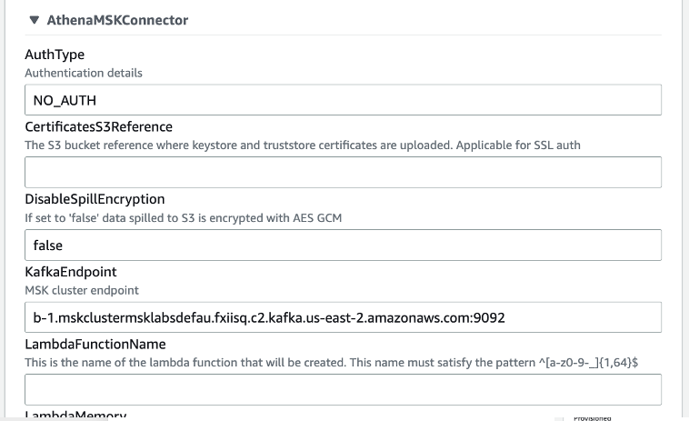
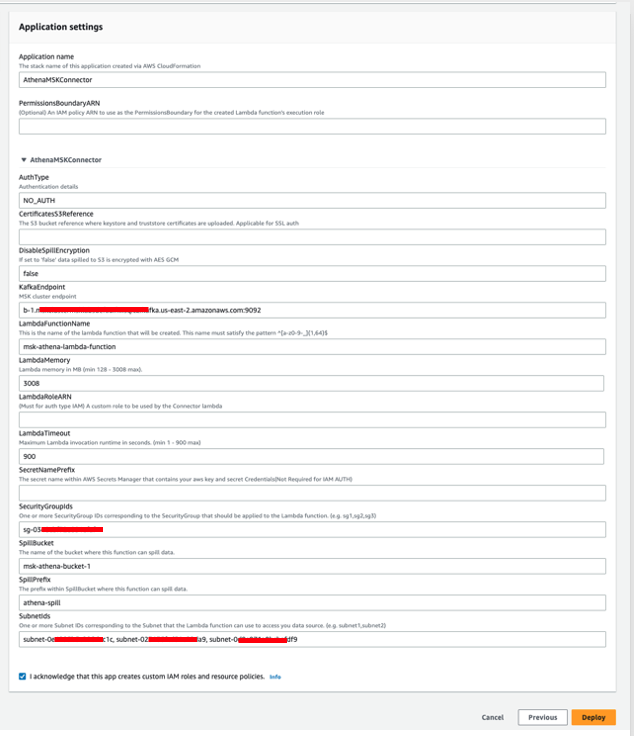
8. Click on I acknowledge that this app creates custom IAM roles and resource policies.
9. Click Deploy (wait for a minute to auto-refresh the page)
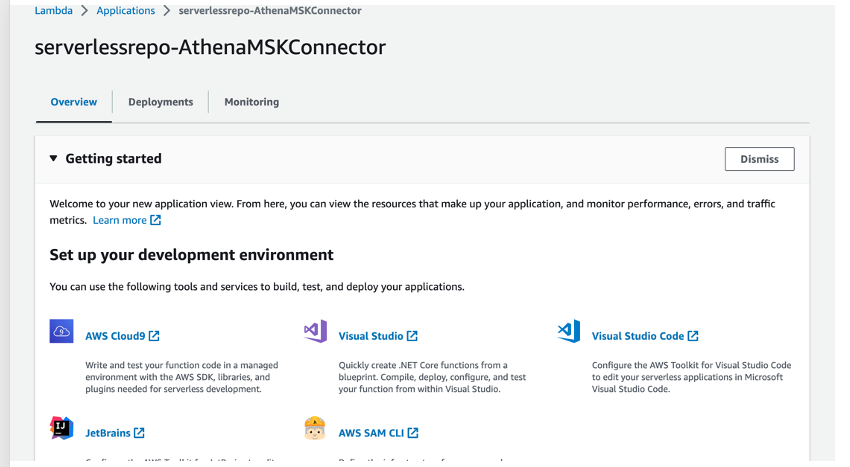
10. Close the Lambda page and go back to previous tab (Athena Console - Enter data source details)
11. In Connection details, use the refresh button and choose Lambda function which we created in the previous step ( msk-athena-lambda-function )
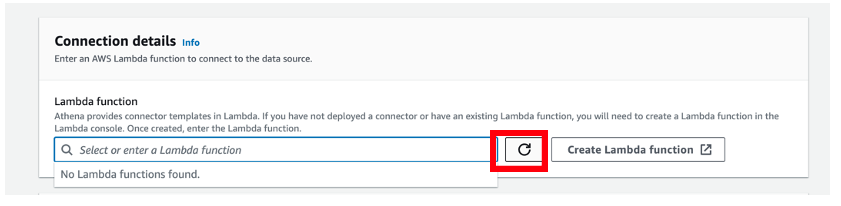
 12. Click Next
12. Click Next
13. Review the details and click Create data source
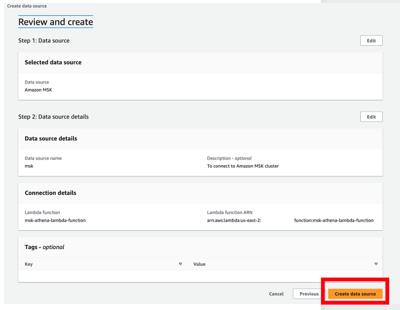
3. Run queries on streaming data using Athena¶
With your MSK data connector set up, you can now run SQL queries on the data. Let’s explore a few use cases in more detail.
Use case: interactive analysis If you want to run queries that aggregate, group, or filter your MSK data, you can run interactive queries using Athena. These queries will run against the current state of your Kafka topics at the time the query was submitted.
- Navigate to Athena Console
- Under Editor tab, in Data section, you will observe the following:
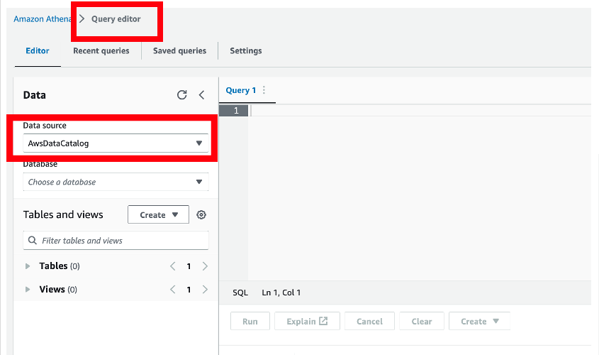
3. Choose msk from the drop down.
4. Choose customer_schema from the database
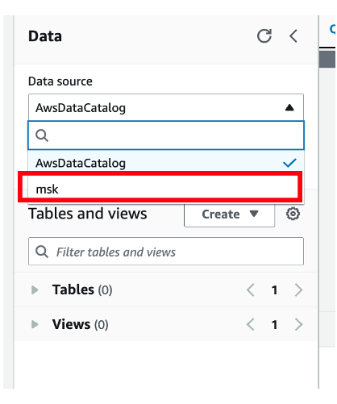
Before running any queries, it may be helpful to validate the schema and data types available within your Kafka topics. To do this, run the DESCRIBE command on your Kafka topic, which appears in Athena as a table, as shown below. In this query, the orders table corresponds to the topic you specified in the Schema Registry customer_schema.
DESCRIBE msk.customer_schema.orders
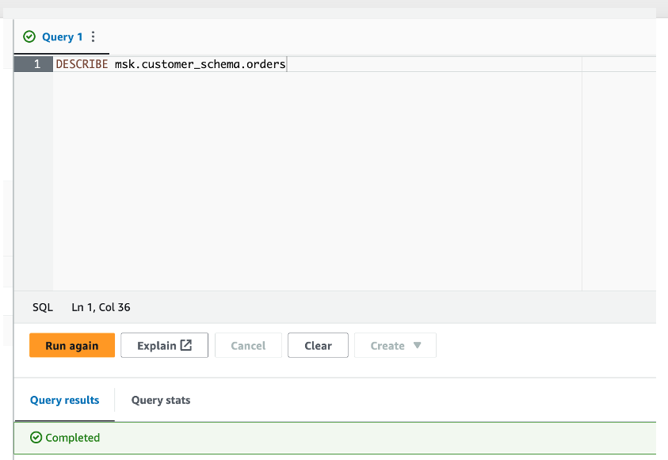
Now that you know the contents of your topic, you can begin to develop analytical queries. A sample query for querying all data in a topic is:
select * from msk.customer_schema.orders;
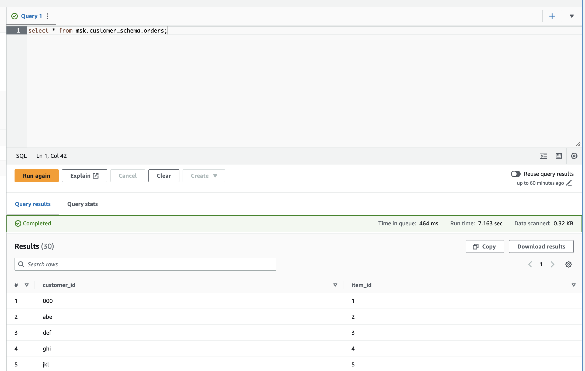
You can proceed to next lab!